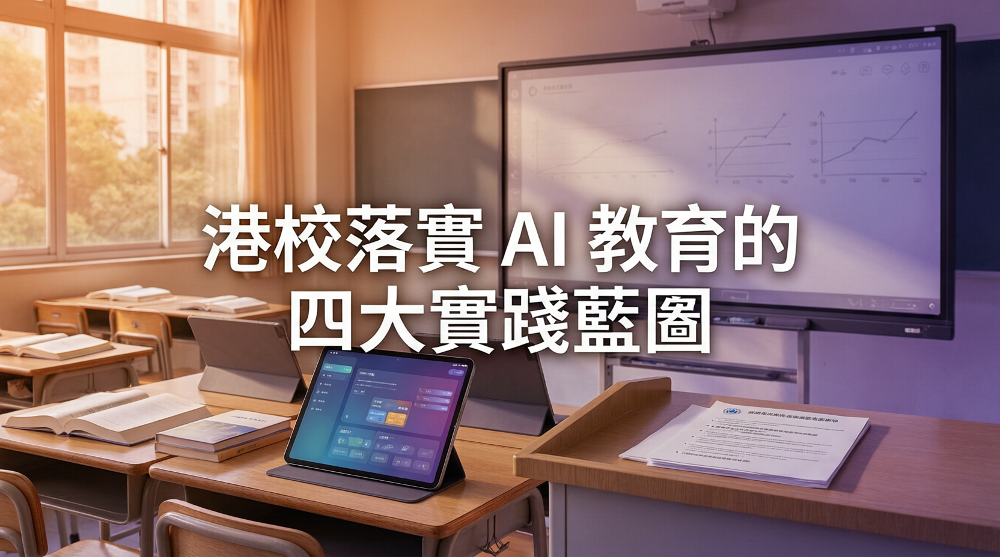

《中小學數字教育發展藍圖》出爐，從校本政策、教學架構、資源到教師培訓全面部署

香港電腦教育學會主席朱嘉添指出，特區政府公布的《中小學數字教育發展藍圖》標誌香港數字教育正式邁向全新時代。在亞太區各國已將 AI 從技術普及昇華至「人工智能+」範式轉移之際，香港須從四大維度全面推動 AI 教育，落實「科技向善」的育人方針。
學校須審視現行指引，在法規合規、數據私隱、學生課業誠信及應用 AI 的道德素養等層面進行全面更新，為師生及家長提供清晰且安全的應用框架。
參考最新的中小學人工智能素養學習架構，全面檢視校內各項工作落實情況，加強與 STEAM、資訊科技組、學術組等科組主管的協作，有系統地啟動或深化各項 AI 教育項目。
因應政府向各中小學發放的「智啟學教」撥款，學校應積極採購適切的人工智能學與教平台，或建構相關創科硬件，為推動 AI 方案提供穩健基礎。
學校需鼓勵及安排教師參與教育局、各大專院校及專業團體舉辦的 AI 教育培訓，並在校內建立分享與觀課文化，促進教師間的跨學科專業交流。
「在 AI 工具氾濫的時代，我們必須堅持『立德樹人』的育人方針。唯有讓科技回歸教育本質，香港的數字教育才能行穩致遠。」
— 朱嘉添，香港電腦教育學會主席、沙田培英中學校長香港作為數字教育領域的「超級聯繫人」，可發揮獨特優勢，在大灣區乃至亞太區數字教育發展中擔當重要角色。關鍵在於學校能否於學期末接獲藍圖後立即動員，將數字教育策略性地納入「學校發展計劃」，確保各科組各司其職、貫徹落實，同時不忘「科技向善」的終極核心，時刻關注學生身心靈健康，防止技術被濫用或誤用。
| 維度 | 主要內容 | 負責單位 |
|---|---|---|
| 校本政策更新 | 法規合規、數據私隱、課業誠信、道德素養框架 | 校方管理層 |
| 教學架構深化 | AI 素養學習架構、跨科組協作、項目深化 | STEAM / 資訊科技組 |
| 資源優化 | 智啟學教撥款、採購 AI 學與教平台、創科硬件 | 學校採購 / IT 組 |
| 教師培訓 | 教育局 / 大專院校 / 專業團體培訓、校內觀課文化 | 教師發展組 |